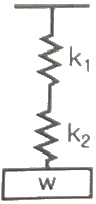
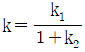
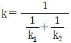
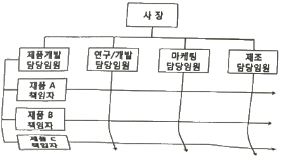
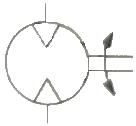
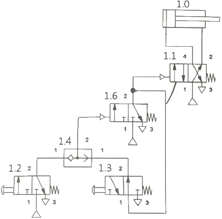

설비보전기사(구) (2018-04-28 기출문제)
1과목: 설비 진단 및 계측
1. 센서에서 입력된 신호를 전기적 신호로 변환하는 방법에 속하지 않는 것은?
- 변조식 변환
- 전류식 변환
- 직동식 변환
- 펄스 신호식 변환
(정답률: 62%)

2. 음의 전파는 매질의 진동에너지가 전달되는 것이므로 음의 진행 방향에 수직하는 단위면적을 단위시간에 통과하는 음에너지를 무엇이라 하는가?(오류 신고가 접수된 문제입니다. 반드시 정답과 해설을 확인하시기 바랍니다.)
- 음압
- 음의 세기
- 음량 출력
- 음의 지향성
(정답률: 78%)
3. 프로세스의 특성 중 입력신호에 대한 출력신호의 특성으로서 시간 영역에서는 인벌류션 적분이고, 주파수 영역에서는 전달함수와 관련된 특성은?
- 외란
- 정특성
- 동특성
- 주파수응답
(정답률: 74%)
4. 상한과 하한의 거리 혹은 중립점에서 상한 또는 하한까지의 거리를 나타내는 진폭의 표시방법은?
- 속도
- 변위
- 주파수
- 가속도
(정답률: 79%)
5. 아래와 같이 스프링을 설치하였을 경우 합성스프링 상수 k이 계산식으로 옳은 것은? (단, k1과 k2는 각각의 스프링 상수이다.)

- k=k1+k2
- k=k1×k2


(정답률: 83%)
6. 진동 센서의 설치 위치로 적합하지 않은 것은?
- 회전축의 중심부에 설치한다.
- 레이디얼 베어링 장착부의 수직 방향에 설치한다.
- 레이디얼 베어링 장착부의 수평 방향에 설치한다.
- 스러스트 베어링 장착부의 축 방향에 설치한다.
(정답률: 82%)
7. 측정 대상에 제한 없이 기체ㆍ액체를 측정할 수 있으며, 유체의 조성, 밀도, 온도, 압력 등의 영향을 받지 않고 유량에 비례한 주파수로 체적 유량을 측정할 수 있는 유량계는?
- 터빈식 유량계
- 용적식 유량계
- 와류식 유량계
- 면적식 유량계
(정답률: 49%)
8. 비접촉형 퍼텐소미터의 특징으로 틀린 것은?
- 섭동 잡음이 전혀 없다.
- 고속 응답성이 우수하다.
- 회전 토크나 마찰이 크다.
- 섭동에 의한 마크가 발생하지 않으므로 방폭성이 있다.
(정답률: 68%)
9. 음원이 이동할 경우 음원이 이동하는 방향쪽에서는 원래 음보다 고주파 음으로 들리고, 음이 이동하는 반대쪽에서는 저주파 음으로 들리는 현상을 무엇이라 하는가?
- 보강 간섭
- 마스킹 효과
- 맥놀이 효과
- 도플러 효과
(정답률: 66%)
10. 다음 신호 변환기 중 저항 변환 방식과 가장 거리가 먼 것은?
- 전위차계
- 가변 저항기
- 저항 온도계
- 스트레인 게이지
(정답률: 54%)
11. 음원으로부터 단위시간 당 방출되는 총 음에너지를 무엇이라 하는가?
- 음원
- 음량 출력
- 음압 실효값
- 음의 전파속도
(정답률: 77%)
12. 회전 기계에서 발생하는 이상 현상 중 발생주파수가 중간주파인 것은?
- 공동
- 언밸런스
- 압력 맥동
- 미스얼라인먼트
(정답률: 57%)
13. 고유진동수와 강제진동수가 일치할 경우 진폭이 크게 발생하는 현상을 무엇이라 하는가?
- 공진
- 풀림
- 상호간섭
- 캐비테이션
(정답률: 84%)
14. 기본적인 소음 방지법으로 틀린 것은?
- 흡음
- 차음
- 진동 댐핑
- 방진구 설치
(정답률: 70%)
15. 설비의 정밀해석 기술로서 전문기술 부서에서 수행하는 기술은?
- 간이 진단 기술
- 정밀 진단 기술
- 고장 수리 기술
- 동작 해석 기술
(정답률: 87%)
16. 압전형 가속도 센서에 대한 내용으로 틀린 것은?
- 소형으로 가볍다.
- 사용 온도 범위가 넓다.
- 주파수 범위는 광대역이다.
- 마운팅에 매우 저감도이므로 손으로 고정해야 한다.
(정답률: 82%)
17. 노이즈 발생을 방지하기 위한 노이즈 대책 중 정전 유도로 인한 노이즈 발생을 방지하는 대책은?
- 연선 사용
- 관로 사용
- 필터 사용
- 실드선 사용
(정답률: 74%)
18. 진동 방지의 일반적인 방법 중 고주파 진동을 방지하는데 가장 효과적인 것은?
- 기초 진동을 제어
- 진동 차단기의 사용
- 2단계 차단기의 사용
- 질량이 큰 거더를 사용
(정답률: 65%)
19. 다음 중 탄성식 압력계에 속하지 않는 것은?
- 압전기식
- 벨로스식
- 브르동관식
- 다이어프램식
(정답률: 61%)
20. 진동체 2개의 고유 진동수가 같을 때, 한쪽을 울리면 다른 쪽도 울리는 현상을 무엇이라 하는가?
- 공명
- 서징
- 음압도
- 캐비테이션
(정답률: 88%)
2과목: 설비관리
21. 다음은 설비관리 조직 중 어떤 형태의 조직인가?

- 설계보증 조직
- 제품중심 조직
- 기능중심 매트릭스 조직
- 제품중심 매트릭스 조직
(정답률: 70%)
22. 대량생산을 위한 공장자동화와 같이 기계화도가 높은 생산 공정에 제조간접비를 배부하는 방식은?
- 직접재료비법
- 직접제조비법
- 기계가동시간법
- 직접노무시간법
(정답률: 64%)
23. 자주보전의 전개단계 중 발생원인 곤란개소대책은 어느 단계인가?
- 제 1단계
- 제 2단계
- 제 3단계
- 제 4단계
(정답률: 72%)
24. 다음 중 TPM 관리의 특징으로 틀린 것은?
- 사전 활동
- 로스 측정
- Input 지향
- 결과중심 시스템
(정답률: 68%)
25. 치공구를 설계하기 위한 방법으로 틀린 것은?
- 지그와 고정구 구성부품의 표준화를 적극적으로 고려할 것
- 복잡한 구조로 불균형한 형상을 가질 수 있도록 고려할 것
- 피공작물의 부착과 해체가 용이하고 공작작업이 쉬운 구조일 것
- 작업 시에 안전성, 신뢰성을 줄 수 있는 구조와 형상일 것
(정답률: 85%)
26. 가공 및 조립형 설비 6대 로스 중 돌발적 또는 만성적으로 발생하는 고장에 의하여 발생하는 시간로스는?
- 고장로스
- 속도저하로스
- 수율저하로스
- 순간정지로스
(정답률: 65%)
27. 설비의 경제성 평가 방법이 아닌 것은?
- 연환지수법
- 자본회수법
- MAPI방식
- 비용비교법
(정답률: 57%)
28. 설비보전 표준의 분류 중 정비 또는 일상보전 조건방법의 표준을 정한 것으로 정비 작업 종류에 따라 급유표준, 청소표준, 조정표준 등이 작성되는 것은?
- 정비 표준
- 수리 표준
- 설비 검사 표준
- 설비 성능 표준
(정답률: 70%)
29. 조업시간 중 정지시간에 해당하지 않는 것은?
- 대기시간
- 준비시간
- 정미 가동시간
- 설비 수리시간
(정답률: 74%)
30. 설비 또는 시스템의 고장의 원인을 탐구하고 규명하기 위하여 생선뼈 모양의 그림으로 분석하는 방법은?
- FTA
- 파레토차트
- 플로우차트
- 특성 요인도 분법
(정답률: 64%)
31. 보전수준을 장소에 따라 분류할 때 공장이나 생산현장에서 주요 보전업무를 수행하는 보전은?
- 중간차원 수준보전
- 제조업자 차원보전
- 하청업체 차원보전
- 회사수준차원의 보전
(정답률: 65%)
32. 다음 중 치공구에 속하지 않는 것은?
- 지그
- 라인
- 검사구
- 고정구
(정답률: 75%)
33. 공사시간을 단축하기 위한 방법이 아닌 것은?
- LP법
- DCF법
- MCX법
- SAM법
(정답률: 51%)
34. 보전용 자재 관리에 대한 설명 중 옳은 것은?
- 불용자재의 발생 가능성이 적다.
- 자재구입의 품목, 수량, 시기의 계획을 수립하기가 용이하다.
- 소모, 열화되어 폐기되는 것과 예비기 및 예비부품과 같이 순환 사용되는 것이 있다.
- 보전용 자재는 연간 사용빈도가 높으며, 소비 속도도 빠른 것이 많다.
(정답률: 55%)
35. 사람, 물건, 설비의 관계를 가장 경제적으로 얻기 위해 제품을 구성하는 각 부품이나 재료의 입하부터 최종 출하까지의 생산설비를 계획하는 것은?
- 설비배치
- 구조설계
- 안전설계
- 운반 시스템 설계
(정답률: 71%)
36. 다음 중 고장의 분석 후 대책을 세우는 방법으로 틀린 것은?
- 안전율을 높인다.
- 응력을 분산시킨다.
- 강도, 내력을 낮춘다.
- 온도, 습도 등의 작업 환경을 개선한다.
(정답률: 73%)
37. 현상파악에 사용되는 방법 중 공정이 정상상태인지, 이상 상태인지를 판독하기 위한 방법은?
- 관리도
- 체크시트
- 파레토도
- 히스토그램
(정답률: 58%)
38. 설비배치의 형태에 관한 설명 중 틀린 것은?
- 제품별 설비배치는 작업의 흐름 판별이 용이하다.
- 기능별 설비배치는 소품종 대량생산의 경우에 알맞은 배치 형식이다.
- 총체적 설비배치 계획은 공장입지선정, 건물배치계획, 부서배치계획 및 설비배치 계획 단계로 실시된다.
- GT셀(Group Technology Cell)은 여러 종류의 기계에 속하는 대부분의 부품가공을 할 수 있는 경우의 설비배치이다.
(정답률: 59%)
39. 설비의 경제성 평가방법 중 비용비교법에서 연간비용을 산출하는 방법은?
- 상각비+평균이자+가동비
- 상각비-평균이자+가동비
- 상각비+평균이자-가동비
- 상각비-평균이자-가동비
(정답률: 79%)
40. 열관리의 영역에서 열에너지 흐름에 따른 분류에 해당하지 않는 것은?
- 연료의 관리
- 연소의 관리
- 인화점의 관리
- 열사용의 관리
(정답률: 66%)
3과목: 기계일반 및 기계보전
41. 두 축의 중심선을 일치시키기 어렵거나, 전달토크의 변동으로 충격을 받거나, 고속회전으로 진동을 일으키는 경우에 충격파 진동을 완화시켜 주기 위하여 사용하는 커플링은?
- 머프 커플링
- 클램프 커플링
- 플렉시블 커플링
- 마찰 원통 커플링
(정답률: 73%)
42. 압축공기 저장 탱크의 안전밸브 역할이 아닌 것은?
- 배출량의 조정
- 2차 압력의 조정
- 토출 압력의 조정
- 토출정지 압력의 조정
(정답률: 64%)
43. 다음 중 원형 밸브 판의 지름을 축으로 하여 밸브 판을 회전시켜 유량을 조절하는 밸브는?
- 감압 밸브
- 앵글 밸브
- 나비형 밸브
- 슬루스 밸브
(정답률: 68%)
44. 공작기계의 절삭 운동과 이송 운동에 대한 설명으로 옳은 것은?
- 선반 가공은 공구를 회전시키고, 공작물이 직선 운동을 하며 가공하는 작업이다.
- 밀링 가공은 공구를 회전시키고, 공작물이 이송 운동을 하며 가공하는 작업이다.
- 원통 연삭 가공은 공작물을 회전시키고, 공구는 직선 운동을 하며 가공하는 작업이다.
- 플레이너 가공은 공구를 회전시키고, 공작물이 직선 운동을 하며 나사 가공하는 작업이다.
(정답률: 67%)
45. 다음 기호의 명칭으로 옳은 것은?

- 유압 펌프
- 공기압 모터
- 유압 전도장치
- 요동형 액추에이터
(정답률: 71%)
46. 다음 중 금긋기 작업 시 유의해야 할 사항으로 틀린 것은?
- 금긋기 선은 깊게 여러 번 그어야 한다.
- 기준면과 기준선을 설정하고 금긋기 순서를 결정하여야 한다.
- 같은 치수의 금긋기 선은 전ㆍ후, 좌ㆍ우를 구분하지 말고 한 번에 긋는다.
- 금긋기가 끝나면 도면의 지시대로 되었는지 확인한 후 다음 작업 공정에 들어간다.
(정답률: 76%)
47. 볼트, 너트의 풀림을 방지하는 여러 거지 방법이 있다. 그 중 와셔를 굽히거나, 구멍을 만들어 거기에 끼운 후 고정하는 방법은?
- 폴 와셔에 의한 방법
- 스프링 와셔에 의한 방법
- 이붙이 와셔에 의한 방법
- 혀붙이 와셔에 의한 방법
(정답률: 76%)
48. 다음 측정기 중 비교 측정기에 속하지 않는 것은?
- 옵티미터
- 미니미터
- 버니어 캘리퍼스
- 공기 마이크로미터
(정답률: 77%)
49. 기계나 설비를 제작할 때 용접이음을 많이 사용하는 이유로 적당하지 않은 것은?
- 자재가 절약된다.
- 공정수가 감소된다.
- 이음효율이 향상된다.
- 품질검사가 용이하다.
(정답률: 69%)
50. 기어 감속기를 분류할 때 교쇄 축형 감속기에 속하는 것은?
- 스퍼기어
- 헬리컬기어
- 하이포이드기어
- 스트레이트 베벨기어
(정답률: 55%)
51. 파이프 끝의 관용 나사를 절삭하고 적당한 이음쇠를 사용하여 결합하는 것으로, 누설을 방지하고자 할 때 접착 콤파운드나 접착테이프를 감아 결합하는 이음은?
- 패킹 이음
- 나사 이음
- 용접 이음
- 고무 이음
(정답률: 64%)
52. 접착제의 구비조건으로 틀린 것은?
- 액체성을 가질 것
- 윤활성을 가질 것
- 모세관작용을 할 것
- 고체화하여 일정한 강도를 가질 것
(정답률: 72%)
53. 일반적인 핀의 호칭법에 대한 설명으로 틀린 것은?
- 분할 핀의 호칭 길이는 긴 쪽 길이로 표시한다.
- 테이퍼 핀의 호칭 지름은 작은 쪽의 지름으로 표시한다.
- 평행 핀의 길이는 양 끝의 라운드 부분을 제외한 길이를 말한다.
- 분할 핀의 호칭 지름은 핀이 끼워지는 구멍의 지름으로 표시한다.
(정답률: 54%)
54. 기어에서 이의 간섭에 대한 방지책으로 틀린 것은?
- 압력각을 크게 한다.
- 이끝을 둥글게 한다.
- 이의 높이를 크게 한다.
- 피니언의 이뿌리면을 파낸다.
(정답률: 64%)
55. 송풍기의 운전 중 점검사항으로 가장 거리가 먼 것은?
- 베어링의 온도
- 베어링의 진동
- 윤활유의 적정여부
- 임펠러의 부식여부
(정답률: 78%)
56. 펌프와 전동기가 커플링으로 연결되어 있을 때 축의 변형 및 열팽창 등을 고려하여 운전 중에 상호 회전 중심축이 일치하도록 기기를 배열하는 것을 무엇이라 하는가?
- 새그
- 연마
- 스프트풋
- 얼라인먼트
(정답률: 80%)
57. 일반열처리 중 풀림의 목적과 가장 거리가 먼 것은?
- 강을 연하게 한다.
- 내부 응력을 제거한다.
- 강의 인성을 증대시킨다.
- 냉간 가공성을 향상시킨다.
(정답률: 58%)
58. 다음 중 3상 유도 전동기 내의 코일과 철심 사이에 완전한 절연을 하기 위해 사용되는 것은?
- 유리
- 바니시
- 에나멜
- 절연 종이
(정답률: 70%)
59. 일반적인 철강재 스프링 재료가 갖추어야 할 조건으로 틀린 것은?
- 가공하기 쉬운 재료여야 한다.
- 높은 응력에 견딜 수 있어야 한다.
- 피로강도와 파괴인성치가 낮아야 한다.
- 표면상태가 양호하고 부식에 강해야한다.
(정답률: 81%)
60. 다음 중 기업의 생산성 향상을 위하여 시행해야 할 사항으로 가장 거리가 먼 것은?
- 설비의 고장, 정지, 성능저하를 방지한다.
- 종업원의 근로 의욕을 높일 수 있도록 한다.
- 작업 부주의 및 원료의 불량에 따른 품질저하를 방지한다.
- 제품 품질을 높이기 위해서 제품원가를 높인다.
(정답률: 84%)
4과목: 윤활관리
61. 그리스 선정 시 고려해야 할 사항으로 가장 거리가 먼 것은?
- 그리스 제조법 및 급지 방법
- 증주제의 종류 및 베이스 오일의 점도
- 윤활개소의 운전조건인 회전수 및 하중
- 윤활개소의 운전 온도범위 및 물, 약품 등의 접촉유무와 관련된 환경
(정답률: 76%)
62. 다음 중 경계 윤활에 대한 설명으로 옳은 것은?
- 극압 윤활이라고도 한다.
- 마찰계수는 0.01~0.⑤ 정도이다.
- 후막 윤활로 가장 이상적인 윤활상태이다.
- 불완전 윤활이라고도 하며, 고하중 저속 상태에서 발생하기 쉽다.
(정답률: 56%)
63. 운전 중 압축기 윤활유의 관리를 위한 점검사항으로 가장 거리가 먼 것은?
- 베어링 검사
- 윤활유의 양
- 윤활유의 온도
- 윤활유의 색상
(정답률: 76%)
64. 윤활유로 베어링을 윤활하고자 할 때 일반적으로 고려해야 할 사항으로 가장 거리가 먼 것은?
- 하중
- 침전가
- 운전속도
- 적정점도
(정답률: 67%)
65. 윤활유의 기유로 사용되는 파라핀계 기유를 설명한 내용 중 틀린 것은?
- 점도지수가 나프텐계 기유보다 낮다.
- 아닐린점이 나프텐계 기유보다 높다.
- 산화저항성이 나프텐계 기유보다 높다.
- 인화점, 유동점이 나프텐계 기유보다 높다.
(정답률: 62%)
66. 무단변속기에 사용되는 윤활유가 가져야 할 윤활조건 중 가장 거리가 먼 것은?
- 기포가 적을 것
- 내하중성이 클 것
- 점도지수가 낮을 것
- 산화안정성이 좋을 것
(정답률: 72%)
67. 다음 중 윤활유 첨가제의 성질로 틀린 것은?
- 증발이 많아야 한다.
- 저장 중에 안정성이 좋아야 한다.
- 냄새 및 활동이 제어되어야 한다.
- 수용성 물질에 녹지 않아야 한다.
(정답률: 81%)
68. 윤활유의 간이측정에 의한 열화 판정의 설명으로 틀린 것은?
- 냄새를 맡아 보고 판단한다.
- 기름을 방치한 후 색상변화로 수분혼입상태를 판단한다.
- 손으로 기름을 찍어보고 점도의 대소를 판단한다.
- 기름과 물을 같은 양으로 넣고 교반 후 기름과 물이 완전히 분리될 때까지의 시간을 측정해 화유화성을 판단한다.
(정답률: 58%)
69. 다음 중 윤활유의 열화 방지법으로 틀린 것은?
- 고온은 가급적 피한다.
- 협잡물 혼입 시 신속히 제거한다.
- 여러 종류의 기름을 혼합하여 사용한다.
- 새로운 기계 도입 시 충분히 세척한 후 사용한다.
(정답률: 83%)
70. 다음 중 윤활관리 기술자의 직무와 가장 거리가 먼 것은?
- 윤활관계 작업원의 교육훈련
- 급유장치의 설치 및 유지관리
- 윤활관계의 사고와 문제점 검토
- 설비고장 원가분석과 윤활유의 제조기술
(정답률: 76%)
71. 다음 기어의 손상 중 윤활유의 성능과 가장 관계있는 것은?
- 피팅(pitting)
- 파단(breakage)
- 스폴링(spalling)
- 스코어링(scoring)
(정답률: 57%)
72. 구름베어링의 그리스 주입에 관한 설명으로 옳은 것은?
- 하우징의 설계에 관계없이 주입량은 같다.
- 과잉 그리스(Excessive Grease)는 저속에서 품질변화와 누설을 일으킨다.
- 과잉 그리스(Excessive Grease)는 고속에서 과열 또는 연화를 일으킨다.
- 공간용적은 하우징의 내용적에서 베어링의 용적을 뺀 값이다.
(정답률: 63%)
73. 그리스를 장시간 사용하지 않고 방치해 두거나 사용과정에서 오일이 그리스로부터 이탈되는 현상을 무엇이라고 하는가?
- 누설도
- 침전도
- 이유도
- 혼화안정도
(정답률: 78%)
74. 다음 중 광유계 유압 작동유에 해당되는 것은?
- 내마모성 작동유
- 물-글리콜계 작동유
- O/W 에멀전계 작동유
- 합성 인산에스테르계 작동유
(정답률: 53%)
75. 극압윤활을 위한 극압제로 사용하지 않는 것은?
- H
- Cl
- S
- P
(정답률: 59%)
76. 공압장치의 액추에이터 습동 부분에 윤활제를 공급하는 장치로 옳은 것은?
- 미니메스
- 오일스톤
- 에어브리더
- 루브리케이터
(정답률: 69%)
77. 다음 그리스의 시험 중 그리스가 물과 접촉된 경우의 저항성을 알고자 할 때 이용되는 것은?
- 항유화도 시험
- 산화안정도 시험
- 혼화안정도 시험
- 수세내수도 시험
(정답률: 65%)
78. 다음 중 Oil Flushing을 해야 할 시기로 가장 적절한 것은?
- 정상 운전 중
- 기계의 수리작업 이후
- 매일 한 번씩 강제 실시
- Oil Sampling 검사를 실시하기 전
(정답률: 74%)
79. 모양을 유지시키기에 충분한 경도의 그리스를 규정 치수로 절단한 후 25℃에서의 주도를 무엇이라고 하는가?
- 고형주도
- 혼화주도
- 불혼화주도
- 1/4주도
(정답률: 62%)
80. 다음 중 윤활관리의 효과로 틀린 것은?
- 설비효율 향상
- 보전노무비 감소
- 윤활유 소비 감소
- 보수 유지비의 증가
(정답률: 81%)
5과목: 공유압 및 자동화
81. 회전식 공기 압축기가 아닌 것은?
- 베인형
- 스크롤형
- 루트 블로워
- 다이어프램형
(정답률: 66%)
82. 제어량이 온도, 압력, 유량, 액면 등과 같은 일반 공업량일 때 발생하는 신호의 형태에 의한 제어는?
- 2진 제어
- 논리 제어
- 디지털 제어
- 아날로그 제어
(정답률: 71%)
83. 다음 회로에 대한 설명으로 옳은 것은?

- 1.3 밸브를 누르면 1.0 실린더가 전진하고, 1.2 밸브를 누르면 1.0 실린더가 후진한다.
- 1.2 밸브와 1.3 밸브를 동시에 동작시켜야 실린더가 전진하고 두 밸브를 동시에 놓아야 즉시 후진한다.
- 1.2 밸브와 1.3 밸브를 동시에 동작시켜야 실린더가 전진하고 두 밸브 중 하나를 놓으면 즉시 후진한다.
- 1.2 밸브를 누르면 1.0 실린더가 전진하고, 1.2 밸브를 놓아도 계속 전진하며 1.3 밸브를 누르면 1.0 실린더가 후진하고, 1.3 밸브를 놓아도 계속 후진한다.
(정답률: 66%)
84. 무인 반송차(AGV)의 특징 중 틀린 것은?
- 레이아웃의 자유도가 낮다.
- 컴퓨터와의 통신이 가능하다.
- 정지, 정밀도를 확보할 수 있다.
- 충돌, 추돌의 회피 등 자기 제어가 가능하다.
(정답률: 72%)
85. 다음 중 자동화의 장점이 아닌 것은?
- 생산성을 향상시킨다.
- 제품의 품질을 균일하게 한다.
- 시설투자비용을 줄일 수 있다.
- 원가를 절감하여 이익을 극대화 할 수 있다.
(정답률: 75%)
86. 유도전동기의 특성에 대한 설명으로 옳은 것은?
- 회전수는 주파수의 반비례한다.
- 무부하 상태에서 슬립은 1% 이하이다.
- 동기속도로 회전할 때 슬립 S는 1이다.
- 슬립은 회전자 속도가 동기속도에 비해 얼마나 빠른가를 나타낸다.
(정답률: 53%)
87. 공압 에너지를 저정할 때에는 긍정적인 효과로 나타나지만 실린더의 저속 운전시 속도의 불안정성을 야기하는 공압의 특성은?
- 배기 시 소음
- 공기의 압축성
- 과부하에 대한 안정성
- 압력과 속도의 무단 조절성
(정답률: 57%)
88. 오리피스(orifice) 에 대한 설명으로 옳은 것은?
- 길이가 단면치수에 비해 비교적 긴 교축이다.
- 유체의 압력강하는 교축부를 통과하는 유체온도에 따라 크게 영향을 받는다.
- 유체의 압력강하는 교축부를 통과하는 유체점도의 영향을 거의 받지 않는다.
- 유체의 압력강하는 교축부를 통과하는 유체점도에 따라 크게 영향을 받는다.
(정답률: 57%)
89. 연속의 법칙에 대한 설명으로 틀린 것은?
- 질량 보존의 법칙을 유체의 흐름에 적용한 것이다.
- 관내의 유체는 도중에 생성되거나 손실되지 않는다는 것이다.
- 점성이 없는 비압축성 유체의 에너지 보존법칙을 설명한 것이다.
- 유량을 구하는 식에서 배관의 단면적이나 유체의 속도를 구할 수 있다.
(정답률: 51%)
90. 유압 펌프의 압력 선정 시 고려할 사항으로만 짝지어진 것은?
- 가열, 누설, 압력, 추종성
- 누설, 무게, 압력, 크기, 안정성
- 무게, 압력, 양정, 크기, 난연성
- 압력, 인화성, 토출량, 공동현상
(정답률: 69%)
91. 서로 이웃한 컴퓨터와 터미널을 연결시킨 네트워크 구성형태이며, 통신회선 장애가 있거나 하나의 제어기라도 고장이 있을 때에는 모든 시스템이 정지될 수 있는 네트워크는?
- 성형(star)
- 환형(ring)
- 망형(mesh)
- 트리형(tree)
(정답률: 66%)
92. 전 단계의 작업완료 여부를 리밋 스위치 또는 센서를 이용하여 확인한 후 다음 단계의 작업을 수행하는 것으로서 공장자동화(FA)에 많이 이용되는 제어방법은?
- 메모리 제어
- 시퀸스 제어
- 파일럿 제어
- 시간에 따른 제어
(정답률: 78%)
93. 공압 실린더의 배기압을 빨리 제거하여 실린더의 전진이나 복귀속도를 빠르게 하기 위한 목적으로 실린더와 최대한 가깝게 설치하여 사용하는 밸브는?
- 급속 배기 밸브
- 배기 교축 밸브
- 압력 제어 밸브
- 쿠션 조절 밸브
(정답률: 77%)
94. 공압 실린더를 사용한 클램핑 장치에서 정전과 같은 비정상 시에 클램프가 풀리지 않도록 하는 방향제어밸브는?
- 판 슬라이드 플로트 위치형 밸브
- 판 슬라이드 올 포트 블록형 밸브
- 5포트 2위치 스프링 오프셋형 싱글 솔레노이드 밸브
- 5포트 3위치 Exhaust 센터형 더블 솔레노이드 밸브
(정답률: 54%)
95. PLC(Programmable Logic Controller)의 출력 인터페이스에 사용할 수 없는 것은?
- 램프(lamp)
- 릴레이(relay)
- 리밋 스위치(limit switch)
- 솔레노이드 밸브(Solenoid valve)
(정답률: 60%)
96. 실린더를 선정할 때 참고해야 할 사항이 아닌 것은?
- 스트로크
- 유압펌프의 종류
- 실린더의 작동속도
- 부하의 크기와 그것을 움직이는 데 필요한 힘
(정답률: 62%)
97. 유압모터의 관성력으로 인한 펌프작용을 방지하기 위해 필요한 보상회로의 명칭은?
- 브레이크 회로
- 유압모터 병렬 회로
- 유압모터 직렬 회로
- 일정 토크 구동 회로
(정답률: 64%)
98. 유압 에너지를 저장할 수 있는 유압기기는?
- 압축기
- 기름 탱크
- 저장 탱크
- 어큐뮬레이터
(정답률: 71%)
99. 방향제어 밸브의 구조 중 스플 방식의 밸브에 대한 설명으로 틀린 것은?
- 다양한 조작방식을 쉽게 적용할 수 있다.
- 전환밸브에서 가장 널리 사용되는 형식이다.
- 다양한 유압 흐름의 형식을 쉽게 설계할 수 있다.
- 밸브 습동 부분에서의 내부 누설이 없고 조작이 확실하다.
(정답률: 49%)
100. 릴레이를 사용한 전기제어 회로에서 릴레이 자신의 접점을 통해 전기신호를 자신의 릴레이 코일에 계속 흐르게 하여 릴레이 코일의 여자 상태를 유지하는 회로는?
- 동조 회로
- 비동기 회로
- 인터록 회로
- 자기유지 회로
(정답률: 75%)